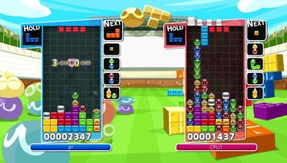

Description
What happens when two classic puzzle games collide? Culture shock, and lots of it! That's what the characters of the Puyo Puyo series find themselves in when a whole host of crazy characters claiming to be Tetris masters crash into the Puyoverse. And it's not only Tetris they want to play - they also claim to be pretty good at Puyo popping! Can these two brainteasers co-exist without driving each other crazy?
Puyo Puyo Tetris is a combination of the Puyo Puyo and Tetris series in which the player battles through seven chapters of 10 stages each, playing as a total of 26 characters in the hopes of determining which puzzle game series is the better of the two. As usual, the objective is to score chains and drown opponents in a wave of Nuisance Puyos and/or extra blocks. But the rules change every time - one match might have the player(s) swapping between Puyo Puyo and Tetris fields, while another may allow them to use items to hinder opponents' progress. Also, at certain points, the player will encounter challenges, where the objective is to reach a certain goal before time runs out.
The traditional battle mode is of course still intact, with up to 4 players battling for Puyo (or Tetris, or who knows? Maybe both) bragging rights.
Publishing Info
- Published by: SEGA Corporation
- Developed by: O-Two, Inc., Sonic Team
- Released: Feb 06, 2014

Game Categories
- Genre: Action, Puzzle
- Perspective: Side view
- Visual: Fixed / Flip-Screen
- Gameplay: Falling block puzzle
Quote
A mash-up seemingly made in heaven, Puyo Puyo Tetris is a delight to play in almost any manor - depending on your taste. The bonus here is that the Switch version of the game adds to that mantra via two immediately available controllers wherever you go, making this the version best suited for including others in the fun. If you like Puyo Puyo, Tetris, or just puzzle games in general, then this is simply a must have.